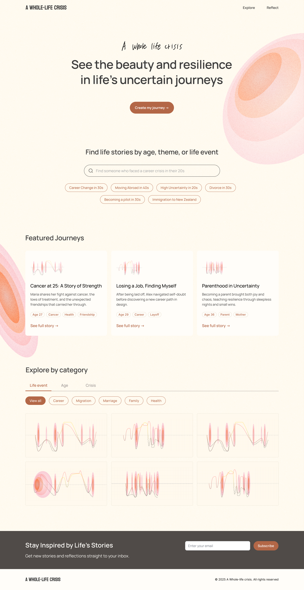

Master’s Project · 2025
Visualizing Uncertainty: The Whole-Life Crisis
- Type
- Master’s Project
- Role
- Designer
- Year
- 2025
About the project
Life crises are universal, yet often framed as isolated moments such as “quarter-life” or “mid-life” crises. This project questions that perspective, exploring uncertainty as something we continuously navigate rather than experience at a specific stage. It reframes life crises as a shared human experience that connects people across age and background.
My role
I conducted research, developed the concept, and designed the UX and prototype. My focus was on translating emotional and qualitative insights into a visual system that communicates life experiences. I created a life graph system to represent uncertainty and emotional change, and designed an interactive prototype for reflection and comparison.
Understanding how people experience life crises
This project began with a personal question: Why does life still feel uncertain in my 30s?
I explored existing concepts such as the quarter-life crisis and mid-life crisis, which describe specific life stages marked by uncertainty and reflection. However, I wanted to understand whether uncertainty is truly limited to these stages.
To investigate this, I conducted
- Literature research on life transitions and crisis stages.
- Semi-structured interviews with young adults (20s–30s) and older adults (40s–60s) across different cultural backgrounds.
From the interviews, I identified recurring themes
- People describe life as “in-between,” “uncertain,” and “not linear.”
- Major life changes often come unexpectedly.
- Uncertainty exists across all life stages, not just early adulthood.
“Nobody tells you that crises don’t stop. You solve one, and then life hands you another.”
54 · South Korean · Director
“I don’t know what I’m doing. Everyone around me seems to have a plan, and I just feel foggy.”
26 · South African · Tutor
Problem framing: the Whole-Life Crisis
Through research and interviews, I found that people across different ages described similar patterns of uncertainty, yet often believed their struggles were unique. This led me to reframe the problem as a Whole-Life Crisis.
Key findings
- Life is not defined by one or two crises, but a continuous process of navigating uncertainty.
- People often feel isolated, even though these experiences are universal.
Design decision: why a graph?
During interviews, participants naturally described their lives using phrases like “ups and downs,” “turning points,” and “highs and lows.” This revealed that people already perceive life as a trajectory over time.
Based on this observation, I explored ways to represent life experiences visually and chose a graph structure because it clearly communicates change, patterns, and turning points across time. A graph also enables comparison between different life journeys, making individual experiences more relatable.
However, representing life as a single line was not sufficient to capture its complexity. I needed a way to reflect both emotional and contextual depth within the same system.
Creating the Life Graph
To capture this complexity, I developed a multi-dimensional Life Graph system using four key metrics:
Certainty
How confident or uncertain they felt · scale −10 to 10
Intensity
Intensity of major turning points · scale 1 to 10
Context
Personal context behind each moment · free text
Emotion
How someone felt at each stage · qualitative
This combination allowed the graph to represent both patterns over time and individual narratives, balancing analytical clarity with emotional meaning. To test whether this system could meaningfully represent real experiences, I applied it to three interview participants and my own life journey — resulting in four life graphs that let me compare different paths and evaluate whether the structure could capture diverse experiences.
User feedback: from visualization to insight
After creating the graphs, I revisited participants and asked them to reflect on both their own graphs and others’. Many reported that:
- Visualizing their life helped them better understand past emotions and decisions.
- Seeing their experiences mapped over time gave clarity to previously confusing periods.
- Comparing with others revealed that uncertainty and crises are universal.
What started as a visualization exercise became a reflective experience.
“I’m not the only one who struggles.”
“My life is full of ups and downs — sometimes it rises, and then suddenly falls.”
“Now I can see why I was so confused and stressed. It makes more sense.”
“Each crisis teaches me to let go a little more, to recognize what I can’t control.”
Product experience: reflecting and exploring life journeys
Based on these insights, I expanded the Life Graph from a visualization tool into a product experience focused on reflection and connection.
The platform is designed around two core flows:
Reflect
Users answer guided prompts about life events, uncertainty, and turning points. Their responses are structured and visualized as a Life Graph, enabling personal reflection.
Explore
Users browse other people’s life graphs by age, theme, or life event. By comparing journeys, users recognize shared patterns of uncertainty and feel less isolated.
By combining self-reflection and comparison, the experience transforms individual crises into a shared understanding — helping users see that their journey is not unique, but part of a broader human experience.

Reflection
This project demonstrates how UX design can transform abstract emotional experiences into a structured visual system. It strengthened my ability to translate qualitative research into design frameworks, and to design systems that support reflection, empathy, and shared understanding.